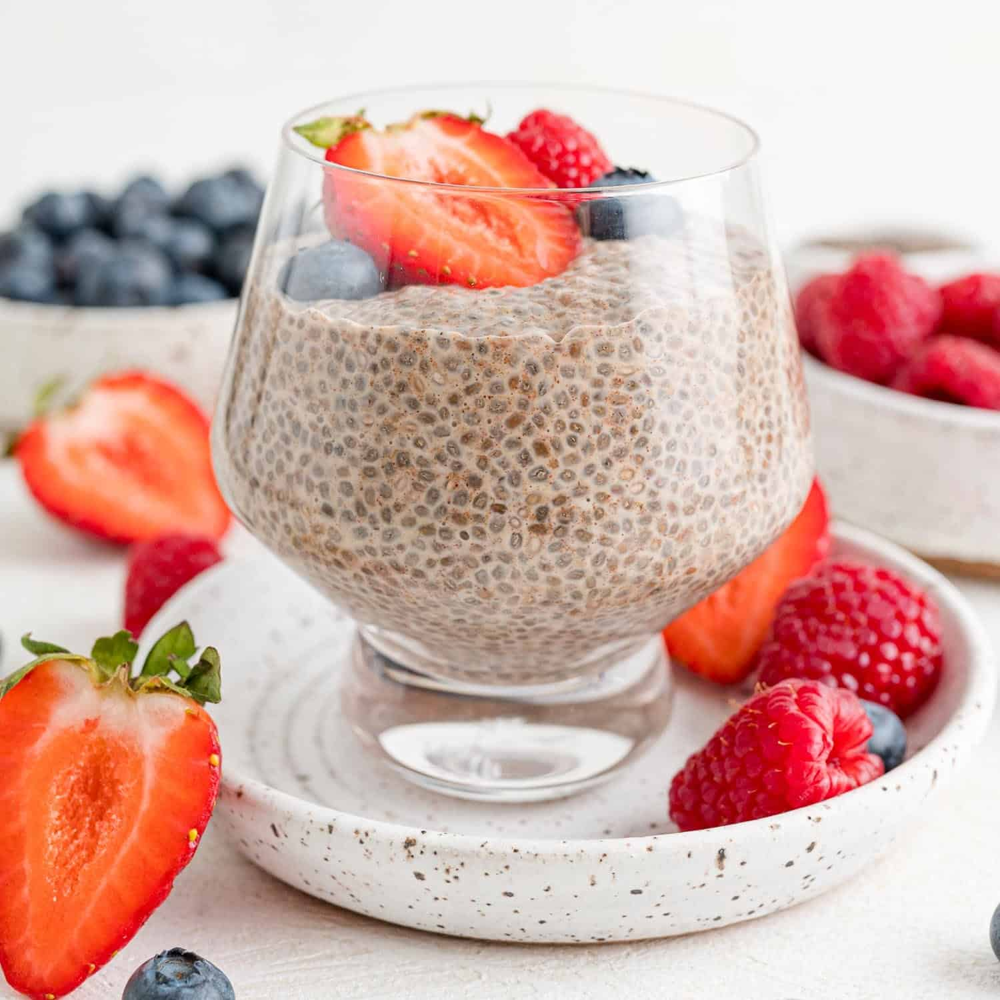

Chia Seed Pudding

Chia seed pudding is a great protein-filled breakfast or snack! It's easy to make and fun to customize to your tastes.
Ingredients
- Chia seeds (5 tbsp)
- Milk or milk alternative (1 cup)
- Greek yogurt (2 tbsp)
- (Optional) Sweetener such as honey or maple syrup
- (Optional) Flavoring such as vanilla extract
- (Optional) Toppings like berries, nuts, or granola
Instructions
- Thoroughly mix the chia seeds, milk, and Greek yogurt in a bowl.
- Stir in your optional sweetener and/or flavoring.
- Wait 5-10 minutes, then stir again to remove any clumps of chia seeds.
- Refrigerate for 2-3 hours, or preferably overnight.
- Before eating, add any toppings you've chosen or enjoy plain!